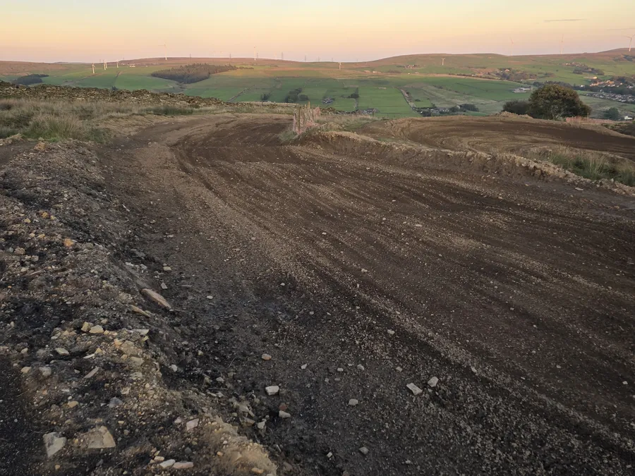
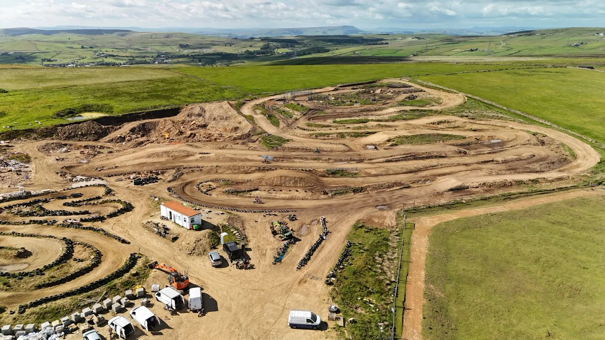
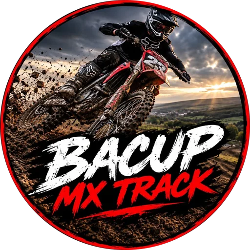
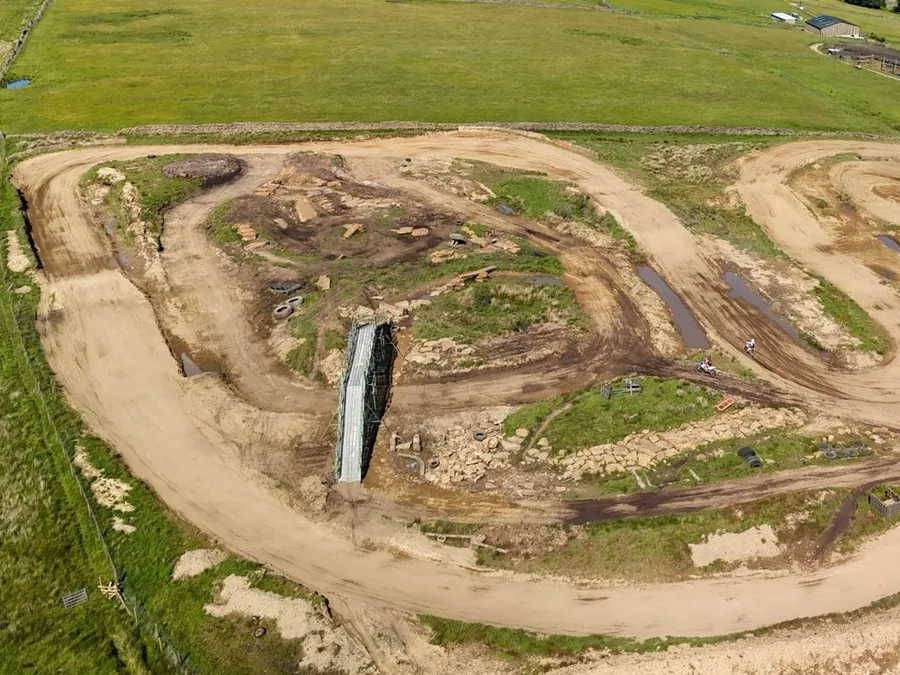
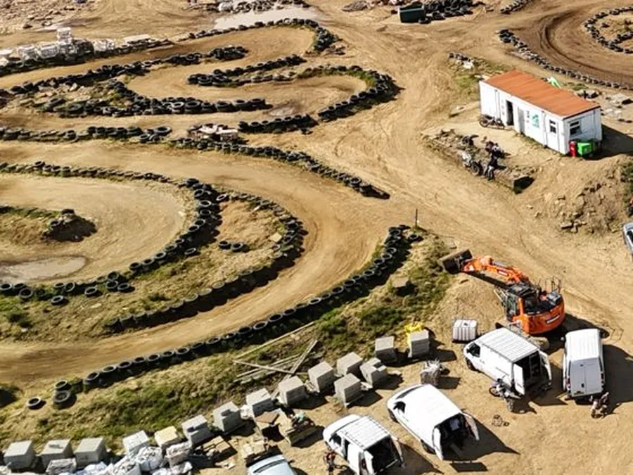
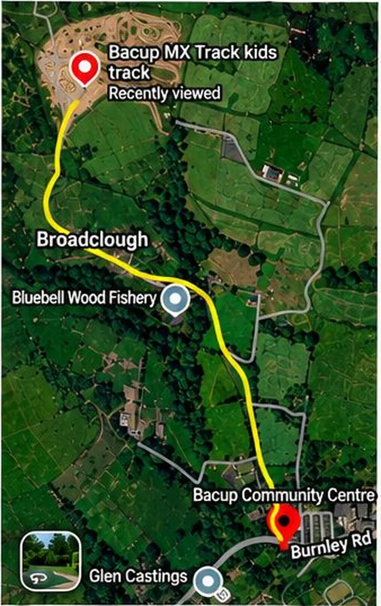

Big track
Motocross
A full MX track across the top of the moor: berms, tabletops, rollers and long straights, with views over Bacup and the wind farm.


Motocross track · Bacup, Lancashire
Open rain or shine
Motocross, enduro in an old quarry, and a separate kids track on the moors above Bacup. No sessions. Turn up, sign on and ride all day, whatever the weather.
Three ways to ride
One day at Bacup MX covers all three. Ride the big track, take on the enduro sections, or let the kids learn on their own track.

Big track
A full MX track across the top of the moor: berms, tabletops, rollers and long straights, with views over Bacup and the wind farm.

Old quarry and infield
An old quarry plus an enduro section in the middle of the MX track. Rocks, slabs and tyres for technical riding at your own pace.
Included in the £30 day price.

Younger and newer riders
Its own tyre-lined track, away from the big bikes, so kids can build confidence before they move up. £15 for the day.
How it works
There are no timed sessions. Once you've signed on and paid, you can ride until we close. The rules below keep everyone safe when riders of different speeds share the track.
Every rider signs the disclaimer at the gate before going on track. Under-18s need a parent or guardian to sign, and that adult stays on site.
No helmet, boots, goggles or gloves means no riding. No excuses. See the kit list.
Younger and newer riders have their own kids track. Under-16s who are ready for more can ride the big track.
Motocross bikes, Surrons and quads. The same kit rules apply to everyone.
Come off track in the pit lane only. Leave the track slowly with your hand raised so riders behind know you're stopping.
No time to fix the bike?
Working late all week and can't get to a shop? Get your parts order in during the week and it's brought to the track at the weekend. Fit it in the pits and you're out riding.
What's available, how to order and terms: TBC with SaddMX
Photos
High on the moor above Bacup: berms, tabletops, the quarry and views across to the wind farm. Tap a photo to see it bigger.
Prices
Prices are per rider for the full day. Pay at the gate when you sign on.
Adult
£30
Big track and enduro, all day.
Under 16 · big track
£20
All day on the big track. Parent or guardian stays on site.
Kids track
£15
All day on the kids track for younger and newer riders.
Parent and child
£40
One adult and one under-16 riding together. Dad and lad, mum and daughter, any pairing.
| Monday | Closed |
|---|---|
| Tuesday | 09:00–16:00 |
| Wednesday | 10:00–20:00 |
| Thursday | Closed |
| Friday | 10:00–18:00 |
| Saturday | 09:00–16:00 |
| Sunday | 09:00–16:00 |
Spectators are free.
Pay at the gate. Online payment TBC
Open rain or shine. Expect mud on wet days. We only close if conditions are unsafe, and closures go on Facebook first.
Rules and safety
Under-16s can ride the big track alongside adults, so these rules are not optional. Track staff can send anyone off for riding dangerously.
| Rider age | Typical bike size |
|---|---|
| 4–8 | 50cc auto |
| 7–11 | 65cc |
| 9–15 | 85cc |
| 14+ | 125cc 2T / 250cc 4T |
| 16+ | Any adult bike |
A general guide based on common UK youth classes. Ask at sign-on if you're unsure whether your rider and bike are a good match.
Flags · in operation on busy days
Flags and marshals are out on busy days, not every day. Learn them anyway, so you know what to do the moment one goes up.
Track is clear. Ride.
Danger ahead. Slow down, no jumping, no passing.
Stop riding. Pull over safely and wait.
You've been called off. Leave the track and see a marshal.
Medical or recovery vehicle on track. Ride with extreme care.
Track closing. Finish your lap and come off.
Kit list
No helmet, boots, goggles or gloves means no riding. Those four are marked Required. If you're kitting out a new rider, start at the top and work down.
Affiliate disclosure: the shop links on this page are affiliate links. If you buy through them, Bacup MX may earn a small commission at no extra cost to you. We only list kit we'd let our own kids ride in. Always check sizing and safety ratings before you buy.
Find us

FAQ
No. Open riding is turn up and ride. Check the track status before you travel.
Yes, as long as you have helmet, boots, goggles and gloves and can control your bike. Younger and newer riders start on the kids track.
Yes. Order your parts during the week and collect them at the track at the weekend, so you can fit them in the pits and ride. How to order TBC with SaddMX
No. We're open rain or shine, so expect mud on wet days. We only close if conditions are unsafe, and we post it on Facebook first.
Yes. All bikes are welcome: motocross bikes, Surrons and quads.
No. You don't need an ACU or AMCA licence to ride at Bacup MX.
Yes, there's first aid on site.
Not at the moment. See the kit list for what to buy.